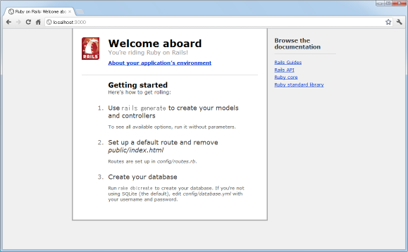
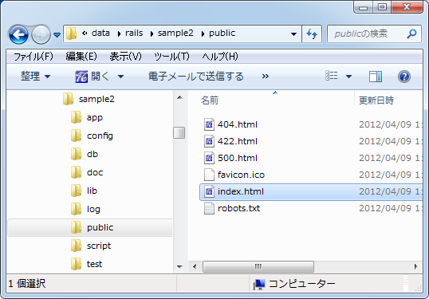
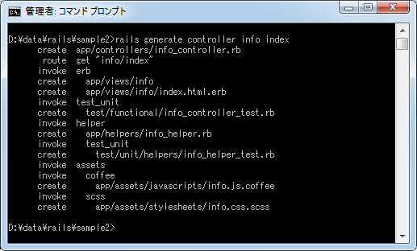
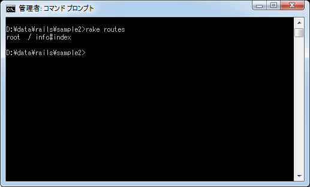
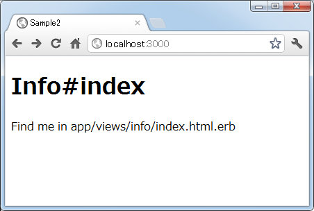

ルート(/)へのルーティング設定
ルーティングの設定とは利用者からのリクエストを表すURLから呼び出すべきコントローラとアクションを見つけ出すルールです。そのURLの中でもルートである「/」に対するリクエストを特定のアクションに結びつける場合は他と違った構文が使われます。ここではルートへのルーティング方法と注意点について解説します。
rootメソッド
Railsでアプリケーションを起動し、そのルートである「http://localhost:3000/」などへブラウザからアクセスしてみるとデフォルトでは次のように表示されます。

これは「public/index.html」に記載された内容が利用者へ返されていますので、このファイルの中身を書き換えることでルートにアクセスした時に利用者へ返される内容を変えることはできます。

ただこれはルートへアクセスした時に用意されたHTMLページを返しているだけです。もしルートへアクセスした場合に特定のアクションを実行させたいのであれば、「root」メソッドを使ったルーティングを設定する必要があります。
ルーティングを設定する「config/routes.rb」ファイルには色々な設定サンプルがコメントとして表示されていますが、ルートに対するルーティングのサンプルも最後の方に記述されています。
Sample2::Application.routes.draw do # You can have the root of your site routed with "root" # just remember to delete public/index.html. # root :to => 'welcome#index' end
実際の書式は次のとおりです。
root :to => 'コントローラ名#アクション名'
例えば「info」コントローラの「index」アクションを呼び出したい場合は次のようにルーティングを記述します。
root :to => 'info#index'
このようにrootメソッドを使うことでルートへアクセスした場合に特定のアクションを呼び出すことが可能となります。
動作確認
それでは実際に試してみます。まずは「info」コントローラと「index」アクションを作成します。今回は同時に作成しました。
rails generate controller info index

コントローラの作成時にアクションも同時に作成すると、そのアクションに対するデフォルトビューが自動的に作成されます。今回はビューの内容は変更せずに利用します。
次にルーティングの設定です。「config/routes.rb」ファイルをテキストエディタで開き、次のように記述します。
Sample2::Application.routes.draw do root :to => 'info#index' end
ファイルを保存した後で確認のために「rake routes」コマンドを実行して下さい。

それでは準備ができましたのでRailsアプリケーションを起動し、ブラウザから「http://localhost:3000/」へアクセスして下さい。すると次のように表示されます。

ルーティングを設定する前と変わりませんでした。実は「public/index.html」ファイルが存在していると、ルーティングの設定を行っても静的なHTMLページの方が優先されて表示されてしまいます。その為、「public/index.html」ファイルの名前を別の名前に変えておきました。(削除されてももちろん構いません)。
では改めてブラウザから「http://localhost:3000/」へアクセスして下さい。今度は次のように表示されます。

このように「info」コントローラの「index」メソッドが呼び出され、デフォルトのビューに記載された内容が利用者に返されてブラウザ上で表示されました。
以上がルートへのアクセスがあった場合に特定アクションを呼び出すための設定方法となります。
( Written by Tatsuo Ikura )

著者 / TATSUO IKURA
初心者～中級者の方を対象としたプログラミング方法や開発環境の構築の解説を行うサイトの運営を行っています。